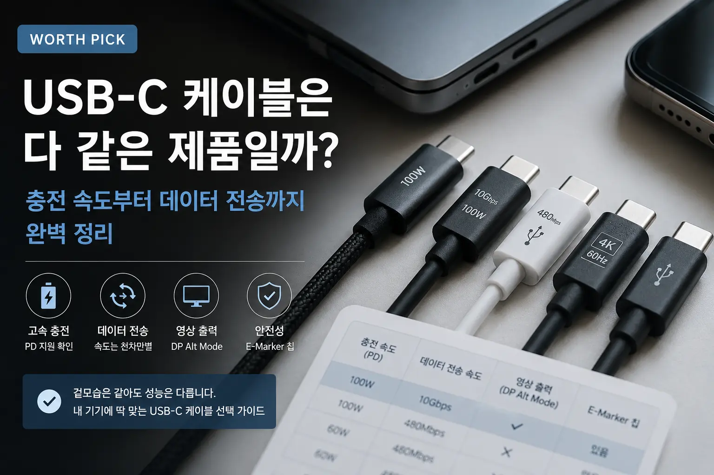

USB-C 케이블은 다 같은 제품일까? 충전 속도부터 데이터 전송까지 완벽 정리
- USB-C 케이블은 단자 모양이 같아도 충전 속도, 데이터 전송 속도, 영상 출력 지원 여부가 다릅니다.
- 노트북 충전용은 100W 이상, 단순 스마트폰 충전용은 60W급도 충분한 경우가 많습니다.
- 모니터 연결, 외장 SSD, 고속 데이터 전송이 목적이라면 반드시 데이터 규격과 영상 출력 지원 여부를 확인해야 합니다.
USB-C 케이블은 왜 헷갈릴까?
요즘 스마트폰, 태블릿, 노트북, 보조배터리, 이어폰, 게임기, 모니터까지 대부분의 기기가 USB-C 단자를 사용합니다. 겉으로 보면 모두 같은 C타입 케이블처럼 보이기 때문에 “아무거나 사도 되는 것 아닌가?”라고 생각하기 쉽습니다.
하지만 USB-C는 단자의 모양을 의미할 뿐, 케이블의 실제 성능을 보장하지 않습니다. 어떤 케이블은 스마트폰 충전만 가능하고, 어떤 케이블은 노트북 100W 충전이 가능하며, 어떤 케이블은 4K 모니터 출력과 초고속 데이터 전송까지 지원합니다.
문제는 제품 상세페이지에서 이 차이를 명확하게 설명하지 않는 경우가 많다는 점입니다. “고속충전 지원”, “C타입 케이블”, “PD 지원” 같은 문구만 보고 샀다가 노트북 충전이 느리거나, 외장 SSD 속도가 나오지 않거나, 모니터 연결이 안 되는 경우가 생길 수 있습니다.
충전 속도 차이: 60W, 100W, 240W는 무엇이 다를까?
USB-C 케이블을 고를 때 가장 먼저 확인해야 하는 것은 충전 전력입니다. 충전 전력은 보통 W, 즉 와트로 표시합니다. 숫자가 높을수록 더 많은 전력을 전달할 수 있습니다.
| 지원 전력 | 주요 용도 | 추천 대상 |
|---|---|---|
| 60W | 스마트폰, 태블릿, 소형 기기 충전 | 일반적인 휴대폰 충전용 |
| 100W | 노트북, 고용량 보조배터리, 태블릿 고속충전 | 맥북·노트북 충전까지 고려하는 사용자 |
| 140W~240W | 고성능 노트북, 대형 전력 기기 | 고출력 PD 충전기가 있는 사용자 |
스마트폰만 충전한다면 60W 케이블도 충분한 경우가 많습니다. 하지만 노트북까지 충전하려면 100W 이상을 지원하는 케이블을 선택하는 것이 안전합니다. 특히 노트북 충전기가 65W, 87W, 100W 이상이라면 케이블도 그 전력을 지원해야 충전기가 가진 성능을 제대로 사용할 수 있습니다.
주의할 점은 충전기, 케이블, 기기 중 하나라도 낮은 전력만 지원하면 전체 충전 속도는 낮은 쪽에 맞춰진다는 것입니다. 100W 충전기를 사용해도 케이블이 60W까지만 지원하면 실제 충전은 60W 수준으로 제한될 수 있습니다.
데이터 전송 속도 차이: 충전은 되는데 파일 복사가 느린 이유
USB-C 케이블은 충전만 하는 케이블과 데이터 전송까지 빠르게 지원하는 케이블이 다릅니다. 특히 외장 SSD, 스마트폰 사진 백업, 카메라 파일 전송, 노트북 연결을 자주 한다면 데이터 전송 규격을 꼭 확인해야 합니다.
| 표기 | 이론상 전송 속도 | 체감 용도 |
|---|---|---|
| USB 2.0 | 480Mbps | 충전 위주, 간단한 파일 전송 |
| USB 3.2 Gen 1 | 5Gbps | 일반 외장 저장장치, 사진·영상 전송 |
| USB 3.2 Gen 2 | 10Gbps | 외장 SSD, 대용량 파일 전송 |
| USB4 / Thunderbolt | 20~40Gbps 이상 | 고속 외장 SSD, 도킹스테이션, 전문가용 작업 |
많은 저렴한 USB-C 케이블은 충전은 잘 되지만 데이터 전송은 USB 2.0 수준에 머무는 경우가 있습니다. 이런 케이블로 외장 SSD를 연결하면 SSD 자체 성능이 좋아도 속도가 제대로 나오지 않습니다.
따라서 외장 SSD나 대용량 파일 전송이 목적이라면 제품명에 단순히 “고속충전”만 적힌 제품보다 “10Gbps”, “20Gbps”, “40Gbps”, “USB4”, “Thunderbolt” 같은 데이터 전송 표기가 있는지 확인해야 합니다.
영상 출력 지원 여부: USB-C라고 모니터 연결이 되는 것은 아니다
USB-C 케이블로 노트북과 모니터를 연결하려는 사람이 많습니다. 하지만 모든 USB-C 케이블이 영상 출력을 지원하는 것은 아닙니다. 영상 출력을 하려면 기기와 케이블 모두 DP Alt Mode, USB4, Thunderbolt 같은 영상 전송 기능을 지원해야 합니다.
예를 들어 어떤 케이블은 충전과 데이터 전송은 가능하지만 모니터 화면 출력은 되지 않습니다. 반대로 썬더볼트 케이블이나 USB4 케이블은 충전, 데이터 전송, 영상 출력을 모두 지원하는 경우가 많습니다.
| 사용 목적 | 필요한 조건 | 확인 문구 |
|---|---|---|
| 스마트폰 충전 | PD 또는 일반 충전 지원 | 60W, PD, 고속충전 |
| 노트북 충전 | 고출력 PD 지원 | 100W, 5A, E-Marker |
| 외장 SSD 사용 | 고속 데이터 전송 | 10Gbps 이상 |
| 모니터 연결 | 영상 출력 지원 | DP Alt Mode, USB4, Thunderbolt, 4K 60Hz |
E-Marker 칩이 중요한 이유
100W 이상의 고출력 충전을 지원하는 USB-C 케이블을 찾다 보면 E-Marker 칩이라는 표현을 볼 수 있습니다. E-Marker는 케이블의 지원 전력과 데이터 성능 정보를 충전기와 기기에 알려주는 역할을 합니다.
특히 5A 전류를 사용하는 100W 충전에서는 E-Marker 칩이 중요합니다. 이 칩이 있어야 충전기와 기기가 케이블의 성능을 인식하고 안정적으로 높은 전력을 주고받을 수 있습니다.
노트북 충전용 케이블을 고른다면 제품 설명에 100W, 5A, E-Marker가 명시되어 있는지 확인하는 것이 좋습니다. 단순히 “고속충전”이라고만 적힌 제품은 실제 지원 전력을 반드시 확인해야 합니다.
용도별 USB-C 케이블 추천 기준
1. 스마트폰 충전용
스마트폰 충전이 목적이라면 60W급 PD 케이블이면 대부분 충분합니다. 다만 케이블이 너무 저렴하거나 인증 정보가 부족한 제품은 피하는 것이 좋습니다. 매일 사용하는 케이블이라면 단선 방지 구조, 적당한 길이, 단자 마감도 함께 확인해야 합니다.
2. 노트북 충전용
노트북 충전용이라면 100W 이상, 5A, E-Marker 칩 지원 여부를 확인해야 합니다. 맥북, 갤럭시북, 그램, 서피스, 고성능 윈도우 노트북 등을 충전하려면 케이블 전력 제한이 충전 속도에 영향을 줄 수 있습니다.
3. 외장 SSD 연결용
외장 SSD를 연결할 때는 충전 전력보다 데이터 전송 속도가 더 중요합니다. 최소 10Gbps 이상을 권장하며, 고성능 외장 SSD를 사용한다면 USB4나 Thunderbolt 케이블을 고려할 수 있습니다.
4. 모니터 연결용
USB-C로 모니터를 연결하려면 영상 출력 지원 여부를 반드시 확인해야 합니다. 제품 설명에 4K 60Hz, 8K, DP Alt Mode, Thunderbolt, USB4 같은 문구가 있는지 확인하세요. 단순 충전 케이블로는 화면이 나오지 않을 수 있습니다.
5. 차량용 또는 여행용
차량이나 여행용 케이블은 내구성과 길이가 중요합니다. 너무 긴 케이블은 정리가 어렵고, 너무 짧은 케이블은 사용이 불편합니다. 보조배터리와 함께 쓸 목적이라면 1m 내외가 편하고, 침대나 책상에서 쓸 목적이라면 1.5m~2m도 고려할 수 있습니다.
USB-C 케이블 구매 시 자주 하는 실수
실수 1. C타입이면 다 같다고 생각한다
USB-C는 단자 모양일 뿐입니다. 실제 성능은 케이블 내부 규격에 따라 달라집니다. 충전만 되는 케이블, 데이터 전송이 빠른 케이블, 영상 출력까지 되는 케이블이 모두 다릅니다.
실수 2. 고속충전 문구만 보고 산다
고속충전이라는 표현은 매우 넓게 사용됩니다. 18W도 고속충전이라고 부르고, 100W도 고속충전이라고 부를 수 있습니다. 반드시 몇 W까지 지원하는지 확인해야 합니다.
실수 3. 데이터 전송 속도를 확인하지 않는다
사진과 영상을 자주 옮기거나 외장 SSD를 사용한다면 데이터 전송 속도가 중요합니다. 충전용 케이블만 사면 파일 전송이 매우 느릴 수 있습니다.
실수 4. 모니터 연결용 케이블을 아무거나 산다
USB-C 모니터 연결은 케이블과 기기 모두 영상 출력을 지원해야 합니다. 모니터 연결 목적이라면 반드시 영상 출력 지원 여부를 확인해야 합니다.
실수 5. 너무 저렴한 고출력 케이블을 선택한다
고출력 충전은 안전성이 중요합니다. 100W 이상 충전용 케이블은 인증, E-Marker, 제조사 신뢰도, 후기 등을 함께 확인하는 것이 좋습니다.
구매 전 체크리스트
- 내가 필요한 용도가 충전용인지, 데이터 전송용인지, 영상 출력용인지 확인하기
- 스마트폰만 충전할지, 노트북까지 충전할지 정하기
- 지원 전력이 60W인지, 100W인지, 240W인지 확인하기
- 100W 이상이면 5A와 E-Marker 지원 여부 확인하기
- 외장 SSD용이면 10Gbps 이상 지원 여부 확인하기
- 모니터 연결용이면 DP Alt Mode, USB4, Thunderbolt, 4K 60Hz 표기 확인하기
- 케이블 길이가 실제 사용 환경에 맞는지 확인하기
- 단자 마감과 단선 방지 구조 확인하기
- 충전기와 기기도 같은 규격을 지원하는지 확인하기
- 너무 저렴한 무표기 제품은 피하기
WORTHPICK의 결론
USB-C 케이블은 이제 거의 모든 기기에서 사용하는 기본 케이블이 되었습니다. 하지만 단자 모양이 같다고 해서 성능까지 같은 것은 아닙니다. 어떤 케이블은 충전만 잘하고, 어떤 케이블은 데이터 전송이 빠르며, 어떤 케이블은 영상 출력까지 지원합니다.
스마트폰 충전만 한다면 지나치게 비싼 케이블이 필요하지 않을 수 있습니다. 반대로 노트북 충전, 외장 SSD, 모니터 연결까지 고려한다면 저렴한 충전 전용 케이블로는 부족할 수 있습니다.
WORTHPICK 기준으로 USB-C 케이블을 고르는 가장 좋은 방법은 “내가 무엇에 쓸 것인지”를 먼저 정하는 것입니다. 충전용, 데이터용, 영상 출력용 중 목적을 정하고, 그에 맞는 전력과 전송 속도, 인증 정보를 확인하면 실패할 가능성이 크게 줄어듭니다.
자주 묻는 질문 FAQ
Q1. USB-C 케이블은 모두 고속충전이 되나요?
아닙니다. USB-C 단자라고 해도 케이블에 따라 지원 전력이 다릅니다. 60W, 100W, 240W 등 지원 범위를 확인해야 합니다.
Q2. 100W 케이블이면 스마트폰에도 써도 되나요?
네. 일반적으로 기기가 필요한 만큼만 전력을 받아가기 때문에 100W 케이블을 스마트폰 충전에 사용해도 됩니다.
Q3. USB-C 케이블로 모니터 연결이 안 되는 이유는 무엇인가요?
케이블이 영상 출력을 지원하지 않거나, 노트북·스마트폰이 DP Alt Mode를 지원하지 않을 수 있습니다.
Q4. 외장 SSD에는 어떤 케이블이 좋은가요?
최소 10Gbps 이상을 지원하는 케이블을 권장합니다. 고성능 SSD라면 USB4 또는 Thunderbolt 케이블을 고려할 수 있습니다.
Q5. E-Marker 칩은 꼭 필요한가요?
100W 이상의 고출력 충전을 안정적으로 사용하려면 E-Marker 칩이 있는 케이블이 좋습니다.
Q6. 케이블 길이가 길면 충전 속도가 느려지나요?
품질이 낮거나 너무 긴 케이블은 전력 손실이 생길 수 있습니다. 고출력 충전용이라면 인증된 제품을 선택하는 것이 좋습니다.
Q7. 저렴한 케이블은 무조건 안 좋은가요?
그렇지는 않습니다. 스마트폰 충전용으로는 합리적인 제품도 많습니다. 다만 고출력 충전, 데이터 전송, 영상 출력 목적이라면 규격 확인이 필수입니다.
Q8. 썬더볼트 케이블은 일반 USB-C와 다른가요?
단자 모양은 같지만 지원 성능이 다릅니다. 썬더볼트 케이블은 고속 데이터 전송, 영상 출력, 충전을 모두 지원하는 경우가 많습니다.
Q9. 충전기가 좋아도 케이블이 안 좋으면 속도가 느려지나요?
네. 충전기, 케이블, 기기 중 가장 낮은 성능에 맞춰 충전 속도가 제한될 수 있습니다.
Q10. 하나만 사야 한다면 어떤 USB-C 케이블이 좋나요?
노트북까지 고려한다면 100W, 5A, E-Marker 지원 케이블을 추천합니다. 데이터 전송이나 모니터 연결까지 필요하다면 10Gbps 이상 또는 USB4 지원 제품을 고르는 것이 좋습니다.